Fun with filters
and frequencies.
From a weighted sum of neighboring pixels to images that change with distance: an illustrated study of convolution and multiresolution processing.
Explore the experimentsNumerical checks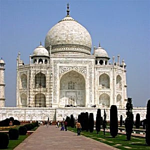
01 · Enhance detail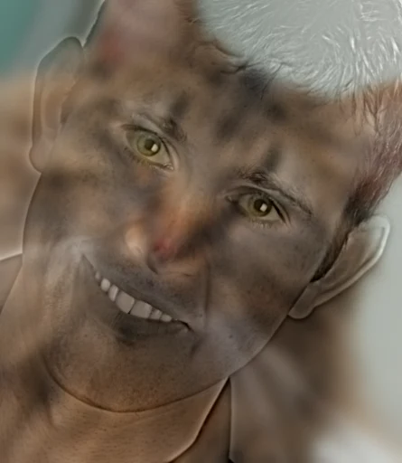
02 · Mix frequency bands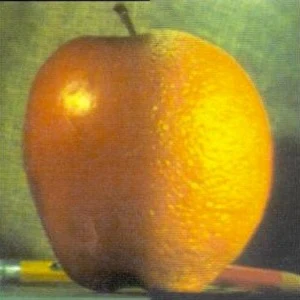
03 · Blend across scalesA convolution, one pixel at a time
At each output location, a patch of the padded image is multiplied element by element with a filter rotated by 180 degrees. Summing those products gives one output pixel. The four-loop version performs every multiplication in Python; the two-loop version uses NumPy for the patch multiplication and reduction.
The input is zero-padded for same output dimensions. A 9 × 9 box filter requires four pixels on every side. For even filter dimensions, the extra padding goes on the top or left to match SciPy’s convention. Pixels outside the image are treated as black, which can darken blurred borders or introduce border edges.
def prepare(image, kernel):
image = np.asarray(image, dtype=float)
kernel = np.asarray(kernel, dtype=float)
if image.ndim != 2 or kernel.ndim != 2 or not kernel.size:
raise ValueError("Expected a grayscale image and a nonempty 2D kernel.")
kh, kw = kernel.shape
padded = np.pad(image, ((kh // 2, (kh - 1) // 2),
(kw // 2, (kw - 1) // 2)), mode="constant")
return padded, kernel[::-1, ::-1], np.zeros_like(image)
def convolve_four(image, kernel):
padded, flipped, output = prepare(image, kernel)
h, w = output.shape
kh, kw = flipped.shape
for i in range(h):
for j in range(w):
total = 0.0
for z in range(kh):
for k in range(kw):
total += flipped[z, k] * padded[i + z, j + k]
output[i, j] = total
return output
def convolve_two(image, kernel):
padded, flipped, output = prepare(image, kernel)
h, w = output.shape
kh, kw = flipped.shape
for i in range(h):
for j in range(w):
patch = padded[i:i + kh, j:j + kw]
output[i, j] = np.sum(patch * flipped)
return outputbox_filter = np.ones((9, 9), dtype=float) / 81
Dx = np.array([[1., 0., -1.]])
Dy = Dx.T
reference = convolve2d(image, box_filter, mode="same",
boundary="fill", fillvalue=0)The three-tap derivative filters above match the diagram on the assignment page. Earlier experiments used two-tap differences; both are finite differences, but their response magnitudes and sampling positions differ.
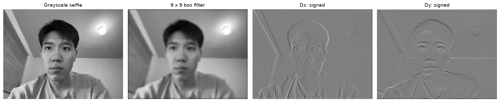
Runtime and numerical agreement
| Recorded experiment | Four loops | Two loops | SciPy |
|---|---|---|---|
| Earlier user measurement, 1280 × 1707 | 31.7 s | 4.3 s | Not recorded |
| New 128 × 128 crop, 9 × 9 box | 0.2255 s | 0.0324 s | 0.0012 s |
The earlier measurement gives a 7.37× speedup. It is preserved as reported, rather than presented as a measurement from this run. The new benchmark times a common crop on the same runtime. Both algorithms still perform O(HWkhkw) arithmetic; vectorization reduces Python overhead.
All 14 checks against SciPy passed, including asymmetric filters, even dimensions, and a filter larger than the test image. The selfie box-filter maximum absolute error was 6.66e-16; the derivative errors were zero.
From brightness changes to edges
Dx measures horizontal brightness changes and emphasizes vertical edges; Dy measures vertical changes and emphasizes horizontal edges. The gradient magnitude combines them: sqrt(dx**2 + dy**2). Thresholding keeps pixels whose change is sufficiently strong.
dx = conv(camera, DX)
dy = conv(camera, DY)
magnitude = np.sqrt(dx**2 + dy**2)
edges = magnitude > 0.16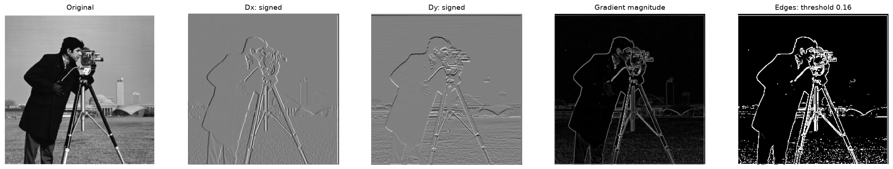
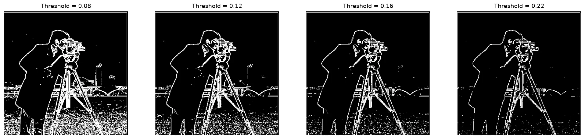
The chosen threshold of 0.16 retains the person’s silhouette and tripod while suppressing much of the low-contrast background. Some textured ground remains, and some distant structures are incomplete. This is a qualitative tradeoff, rather than a claim that every real edge is recovered.
Smooth first, then differentiate
A Gaussian reduces rapid variations before differentiation. A 9 × 9 kernel with σ = 1.5 is constructed from OpenCV’s normalized one-dimensional coefficients using an outer product.
def gaussian_kernel(sigma, size=None):
size = size or (2 * int(np.ceil(3 * sigma)) + 1)
g = cv2.getGaussianKernel(size, sigma).ravel()
return g, np.outer(g, g)_, G = gaussian_kernel(1.5, 9)
smoothed = conv(camera, G)
sx, sy, smooth_magnitude = gradient(smoothed)
smooth_edges = smooth_magnitude > 0.055
DoG_x = conv(G, DX, mode="full")
DoG_y = conv(G, DY, mode="full")
fx = conv(camera, DoG_x)
fy = conv(camera, DoG_y)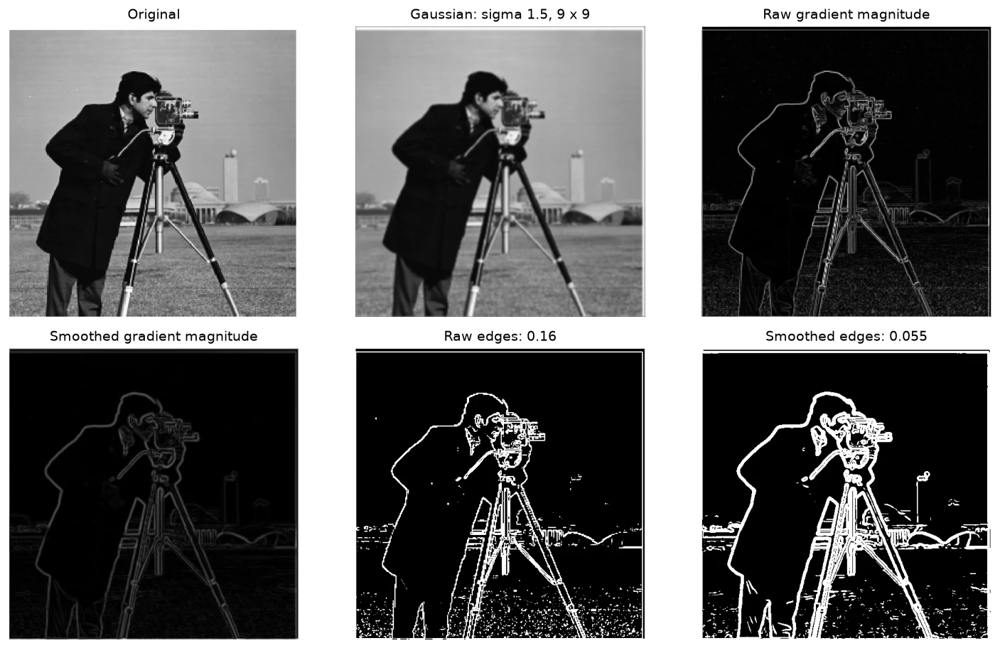
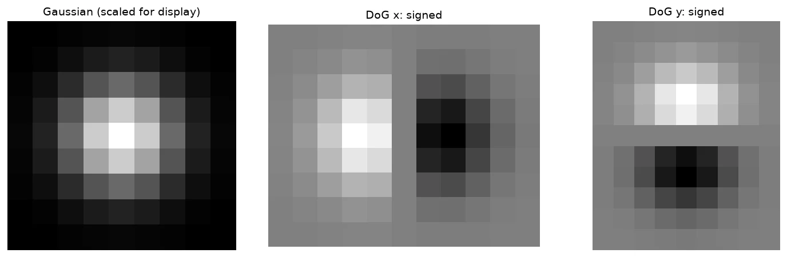
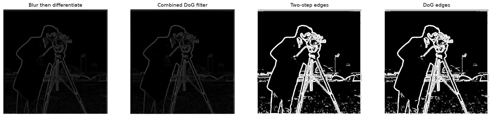
Associativity gives (I * G) * D = I * (G * D). The combined filter is constructed with full convolution, so its support is not truncated. Interior maximum error: 7.29e-16. When both paths use full convolution throughout, the maximum error is 7.29e-16. Repeated same-mode cropping gives a border-inclusive error of 0.367; that difference must not be described as numerical noise.
Direction in color
Hue encodes the gradient direction and value encodes its strength. The angle is recovered without built-in angle functions: a 24-step bisection finds the first-quadrant angle whose sine/cosine ratio matches |Dy|/|Dx|, then signs restore the quadrant. Flat pixels are black because their magnitude is zero. Positive image y points downward.
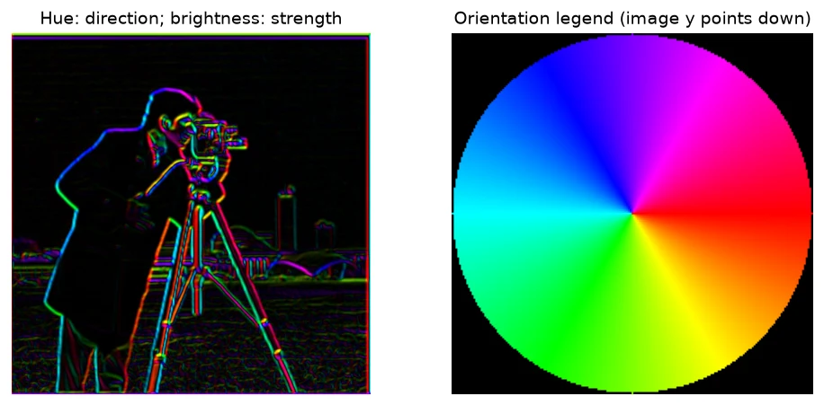
Orientation implementation
def orientation_without_angles(dx, dy):
"""Recover angle via bisection in quadrant I, then restore quadrants.
No arctan, arctan2, angle, or other built-in inverse-angle function.
Image y points down: increasing hue rotates clockwise in image coordinates.
"""
ax, ay = np.abs(dx), np.abs(dy)
low, high = np.zeros_like(ax), np.full_like(ax, np.pi / 2)
for _ in range(24):
middle = (low + high) / 2
bigger = ay * np.cos(middle) > ax * np.sin(middle)
low = np.where(bigger, middle, low)
high = np.where(bigger, high, middle)
theta = (low + high) / 2
theta = np.where(dx < 0, np.pi - theta, theta)
theta = np.where(dy < 0, 2 * np.pi - theta, theta)
return np.where((ax + ay) == 0, 0, theta) % (2 * np.pi)Two images, two viewing distances
A hybrid keeps low frequencies from image A and high frequencies from image B: hybrid = blur(A, σlow) + B − blur(B, σhigh). The supplied starter aligns Derek and Nutmeg by centering, rescaling, rotating, and matching the image sizes. Saved eye coordinates replace interactive clicks so the results are reproducible. A shared face crop excludes the starter’s black padding. The two custom pairs are already aligned by the user; only the unmatched last row in Ansel/Lily is removed, followed by an identical resize. The longest processed side is at most 512 pixels.
def align_starter_pair(high, low, points):
"""Use the supplied starter, replacing interactive clicks with saved points."""
from starter.align_image_code import (align_image_centers, rescale_images,
rotate_im1, match_img_size)
def align(a,b):
a,b = align_image_centers(a,b,points)
a,b = rescale_images(a,b,points)
a,_ = rotate_im1(a,points)
return match_img_size(a,b)
valid_high, valid_low = align(np.ones(high.shape[:2]),np.ones(low.shape[:2]))
high, low = align(high,low)
valid = (valid_high > .999) & (valid_low > .999)
# Crop both images identically to real overlapping pixels, not the padded
# black canvas. The eyes are centered by the starter; include more below.
h,w = valid.shape
cy,cx = round(h*.55),w//2
best = None
for width in range(20,w+1,2):
height = round(width*1.15)
y,x = cy-height//2,cx-width//2
if y<0 or x<0 or y+height>h or x+width>w:
break
if valid[y:y+height,x:x+width].all():
best = (slice(y,y+height),slice(x,x+width))
else:
break
if best is None:
raise ValueError("The selected landmarks have no common valid face crop.")
return resize_pair(high[best],low[best])
def resize_pair(a, b, max_side=512):
"""Preserve an existing alignment; remove only unmatched edge pixels."""
h, w = min(a.shape[0], b.shape[0]), min(a.shape[1], b.shape[1])
a, b = a[:h, :w], b[:h, :w]
scale = min(1.0, max_side / max(h, w))
size = (round(w*scale), round(h*scale))
return (cv2.resize(a,size,interpolation=cv2.INTER_AREA),
cv2.resize(b,size,interpolation=cv2.INTER_AREA))
def hybrid(a, b, sigma_low=7, sigma_high=4, color="both"):
low = blur(a, sigma_low)
high = b - blur(b, sigma_high)
if color in ("gray", "high"):
low = np.repeat(rgb2gray(low)[...,None], 3, axis=-1)
if color in ("gray", "low"):
high = np.repeat(rgb2gray(high)[...,None], 3, axis=-1)
return low, high, low + high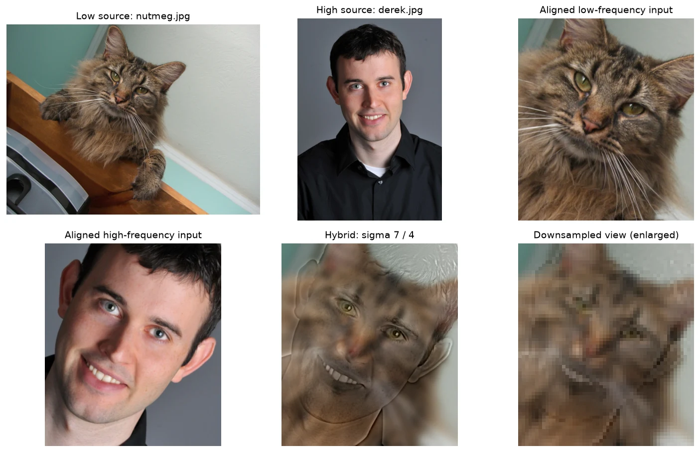
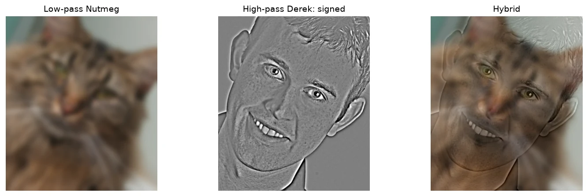
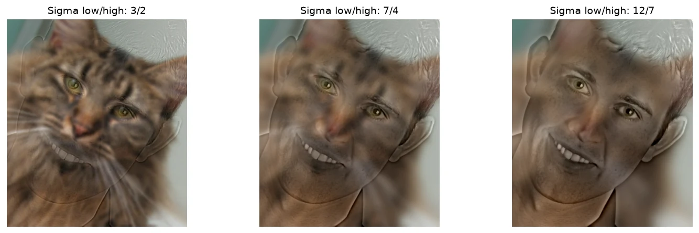
For the selected 7/4 pixel sigmas, the ideal Gaussian half-amplitude frequencies are about 0.0268 and 0.0468 cycles/pixel. These are descriptive cutoffs, not hard passband boundaries. The discrete, truncated filters approximate the ideal response.
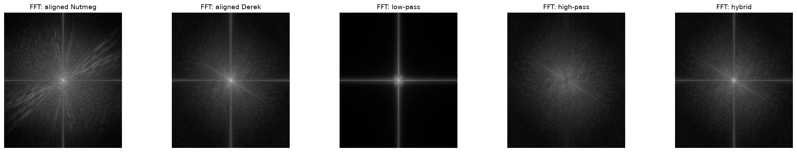
The spectrum is computed with log1p(abs(fftshift(fft2(gray)))). Adding one avoids log(0).
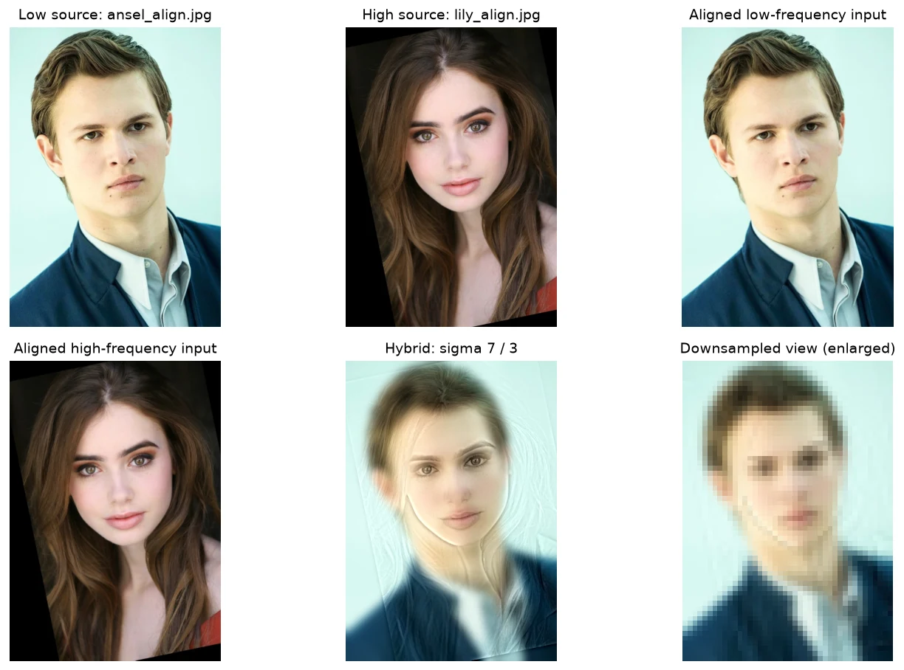
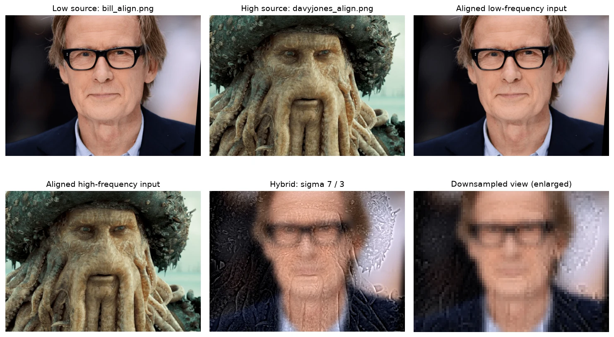
Bells and whistles: where should the color go?
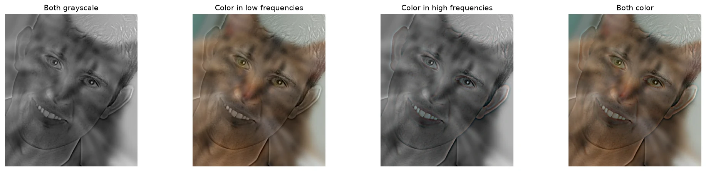
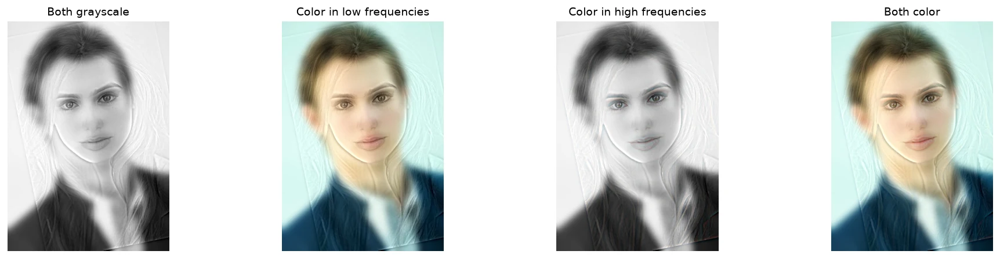
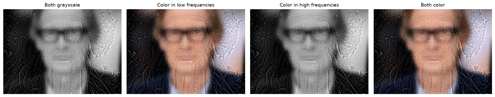
All three final hybrids use color in the low-frequency component and grayscale in the high-frequency component. This gives the distant image a stable color appearance while avoiding competing colored outlines. The grayscale and both-color versions remain visible above as alternatives, rather than treating one choice as universally best.
Reversing the frequency assignment
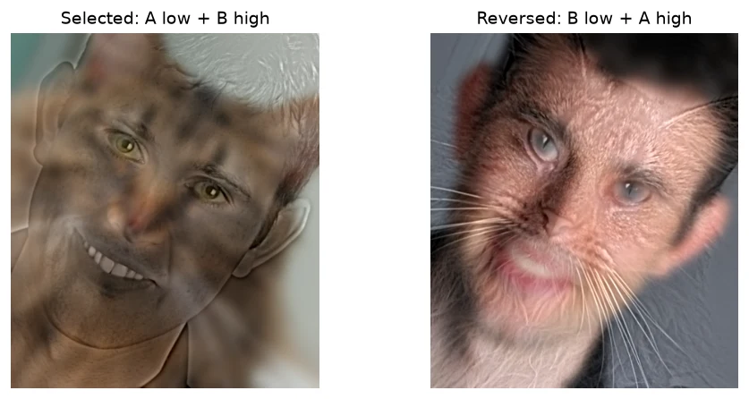
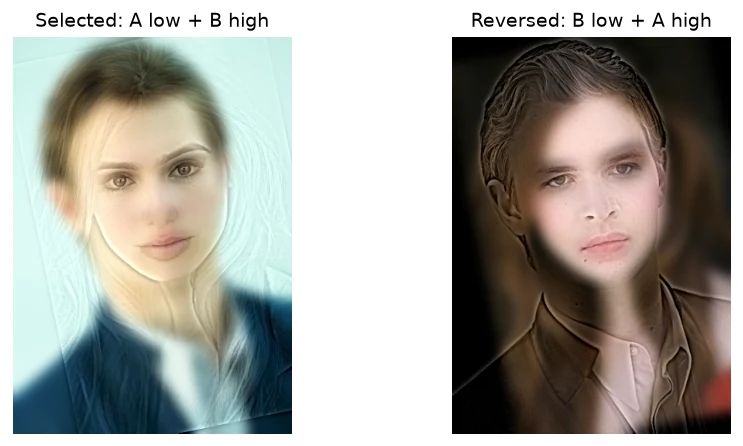
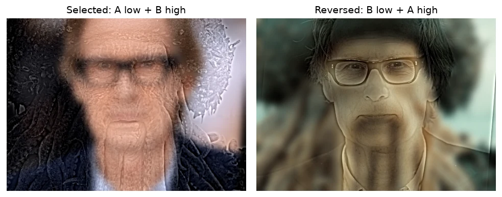
The Ansel/Lily and Bill/Davy Jones files were supplied by the user as selected image pairs; they are not described as photographs taken by the user.
A stack keeps every level the same size
The Gaussian stack has six levels with approximate cumulative sigmas 0, 1, 2, 4, 8, and 16. Each level blurs the preceding level by an incremental sigma based on variance addition. Nothing is downsampled, and no built-in pyramid function is used.
Laplacian levels are adjacent differences: L[i] = G[i] − G[i+1]. The last level stores the remaining low-frequency image. Summing all levels reconstructs the input because the differences telescope.
def gaussian_stack(image, levels=6, base_sigma=1):
"""No downsampling: levels have sigma 0, 1, 2, 4, 8, 16 by default.
Blur each preceding level by the incremental sigma needed to reach the
next target variance. Finite sampled kernels approximate these variances.
"""
stack = [np.asarray(image, dtype=float)]
previous_sigma = 0
for level in range(1, levels):
sigma = base_sigma * 2**(level-1)
incremental = np.sqrt(sigma**2 - previous_sigma**2)
stack.append(blur(stack[-1], incremental))
previous_sigma = sigma
return np.stack(stack)
def laplacian_stack(gaussian):
return np.concatenate((gaussian[:-1] - gaussian[1:], gaussian[-1:]), axis=0)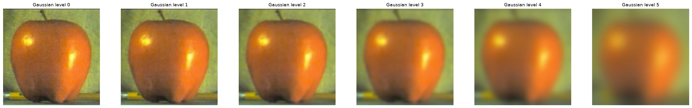
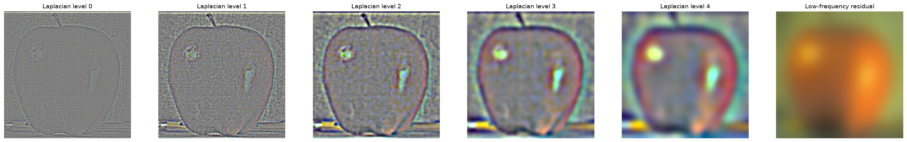
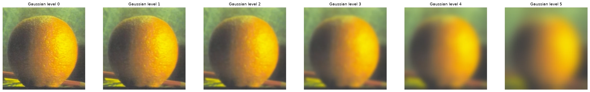
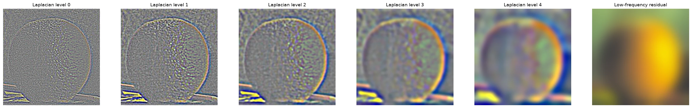
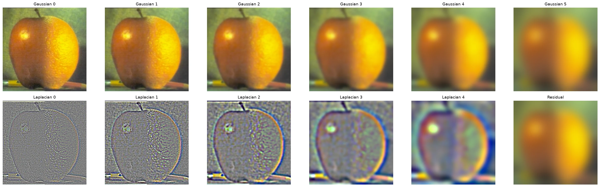
Maximum reconstruction errors: apple 1.11e-16; orange 2.78e-17.
A different transition at every scale
A Gaussian stack of the mask controls how the two Laplacian stacks mix. White selects A, black selects B. At each level, Lblend = M × LA + (1 − M) × LB; adding the blended levels reconstructs the final image. Fine details use a narrow transition, while coarse appearance is mixed over a wider area.
def multiresolution_blend(a, b, mask, levels=6):
ga, gb = gaussian_stack(a, levels), gaussian_stack(b, levels)
gm = gaussian_stack(mask, levels)
la, lb = laplacian_stack(ga), laplacian_stack(gb)
weights = gm[...,None] if a.ndim == 3 else gm
contribution_a, contribution_b = weights*la, (1-weights)*lb
bands = contribution_a + contribution_b
return bands.sum(axis=0), (ga,gb,gm,la,lb,contribution_a,contribution_b,bands)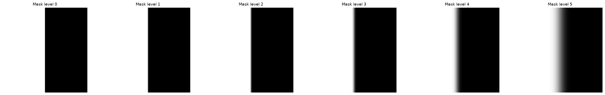
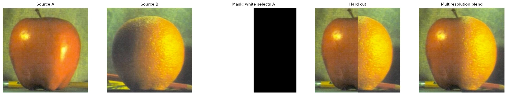
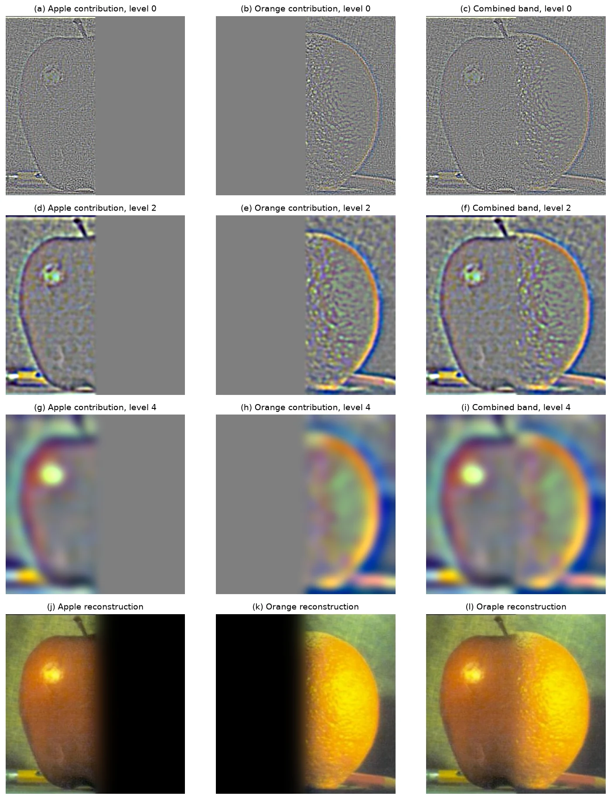
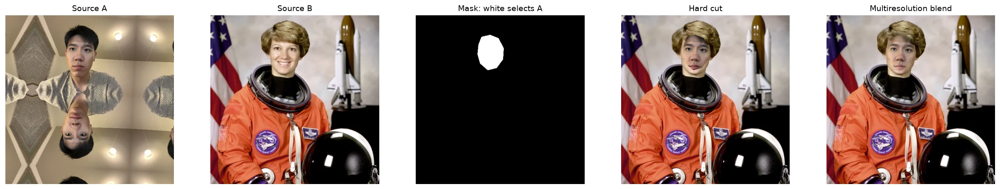
The multiresolution result removes the obvious cut around the face. Lighting, hair, and pose still differ; smooth transitions cannot make incompatible subjects geometrically identical.
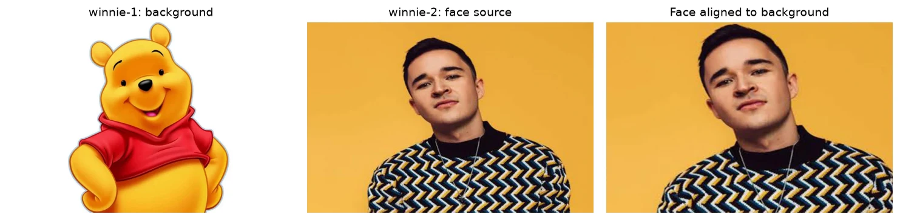
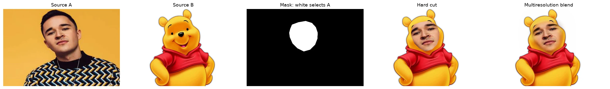
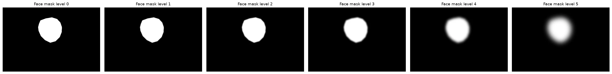
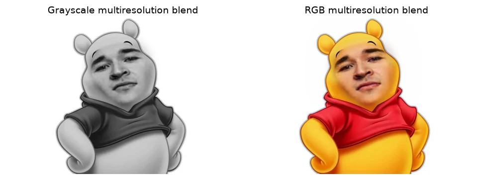
The multiresolution blend softens the abrupt forehead and cheek edges visible in the hard cut. Color and shading still differ between a photograph and a cartoon; the result is intentionally a stylized composite, not a claim of photorealism.
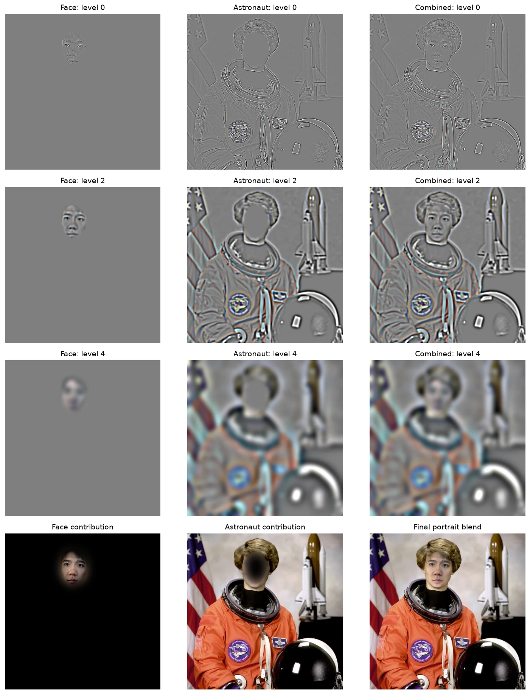
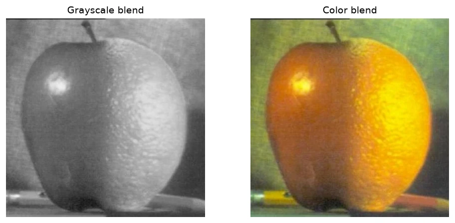
Both custom blends use non-straight face polygons. All-zero and all-one mask tests reconstruct the selected input, checking the mask convention and residual handling.
What this project makes visible
Convolution does not just blur an image: the same patch-and-sum operation can average brightness, measure directional change, or sharpen detail depending on the filter. The most useful distinction is between the computed array and its display. A signed derivative displayed on [0, 1] can look almost black even when the calculation is correct. Clipping it too early destroys information needed by later operations.
Frequency separation also has limits. Sharpening cannot exactly restore information removed by blur; aligned eyes do not guarantee aligned mouths; and a smooth blend does not correct incompatible lighting or geometry. Numerical checks establish correctness of the operations, while the images reveal whether their parameters and inputs produce a convincing result.
Inputs, code, and measured results
The implementations and the new examples were created for this project. The report text is an editable draft based on generated outputs; review the wording and image choices before submitting it as your own explanation.
- Assignment and filter definitions; Taj Mahal from the assignment’s
files/taj.jpg. - Selfie and cameraman were read from the existing project’s
datafolder. - Derek, Nutmeg, and the alignment helper come from the user’s supplied
cs180_proj2_hybrid_starter_codefolder. The starter helper is retained with the private source-code submission. - Apple and orange are the standard course example inputs, retrieved from this input-image mirror. No implementation code was used.
- Ansel/Lily, Bill/Davy Jones, and winnie-1/winnie-2 are user-supplied image files. Original publication/photographer credits were not provided.
- Astronaut (Eileen Collins / NASA) is scikit-image sample data, used for the sharpening evaluation and the retained astronaut/selfie blend.
- SciPy convolution documentation and OpenCV Gaussian-kernel documentation.
Measured results. Full implementation files are included in the separate code submission, not hosted on this website, following the course instructions. The short implementation snippets above illustrate the requested methods.
The separate project folder includes all input data. Run python project2.py, then python build_report.py. This report has no external script, font, or image dependencies. The hybrid-size slider is interactive online; the PDF shows static figures.